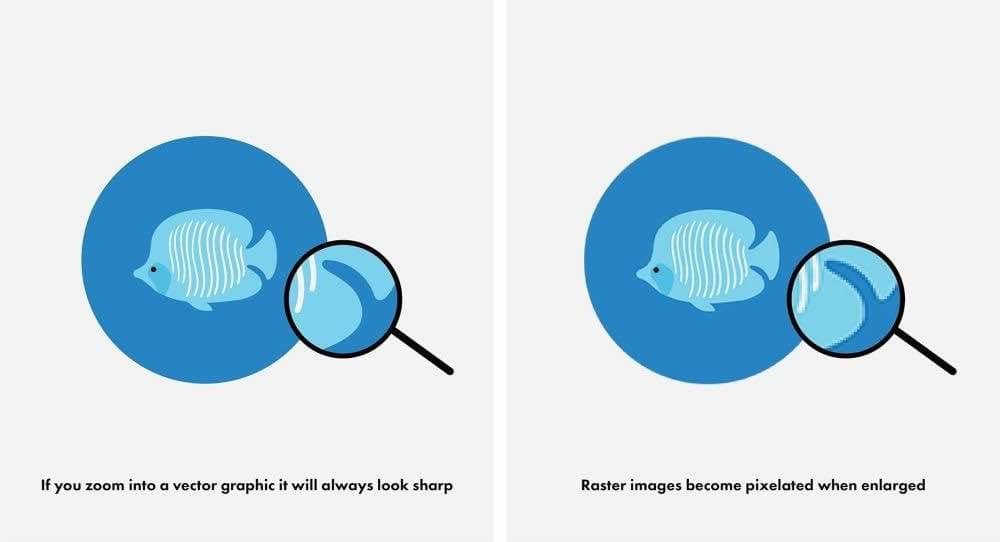

Grafika Wektorowa
Grafika wektorowa opiera się na matematycznych równaniach opisujących linie, kształty oraz kolory. Dzięki temu obrazy tworzone tą metodą są nieskończenie skalowalne – nie tracą jakości przy powiększaniu.
Metoda ta jest szczególnie ceniona przy projektowaniu logo, ikon czy ilustracji, gdzie precyzja oraz możliwość łatwej edycji mają kluczowe znaczenie. Wektorowe obrazy są wykorzystywane w druku, na stronach internetowych oraz w animacjach.
Popularne narzędzia do pracy z grafiką wektorową to m.in. Adobe Illustrator oraz Inkscape.
